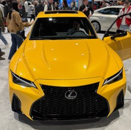
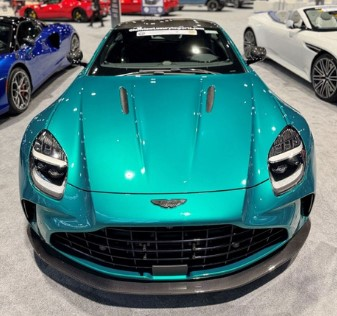

Hello, my name is Ahmed Abukar. I am currently a sophomore at the Illinois Institute of Technology (IIT), majoring in Cybersecurity & IT.
Previously, I was a computer engineering major; however, I switched my major going into my sophomore year as I figured cybersecurity was a better fit for me.
I decided to pursue cybersecurity because of its exciting career opportunities. Growing up, I was always fascinated by tech and engineering, so I believe cybersecurity is the perfect fit for me.
Below, I'll share more about myself and my interests outside of college.
Background
Born Somalia and raised in Syria and Turkey.
Currently living in Chicago, IL.
Originally from Mogadishu, Somalia.
About Me
In this section, I’ll provide a more detailed version of myself.
I work part-time while attending college full-time. I work at a perfume warehouse as an assistant manager, where I interact with customers daily.
Ultimately, it's a sales position, which I enjoy because of the variety of people I meet retailers and wholesalers, and local customers.
In addition, I recently interned as IT coordinator for CMSA, where I assisted high school students and teachers in repairing their electronic devices and guiding them how to mkae the most of it.
I’ve loved FIRST Robotics ever since middle school and have been a part of the organization throughout my middle and high school years. I was the coach of my high school team and had the opportunity to go to state.
Because of my passion for tech, I was allowed to mentor students, helping them prepare for their college while interning and gaining experience.
Recently, I visited the Chicago Auto Show due to my passion for cars. I'll be adding some pictures below, along with robotics.
Anyway, that’s a little bit about myself, and I hope you enjoy the rest of the website!
Auto Show
Here are some pictures I took from the auto show. I'll show the Lexus IS 500, a naturally aspirated V8 with a sleek and sporty look.
I will also add the Aston Martin DB12 in green. I love how the manufacturer blends luxury, performance, and unique interior design.


Robotics
I will also add a picture of an elevator mechanism the students made in robotics, which reaches up to 8 feet high. This was built for the First Robotics Competition (FRC) team where students design, build, and program robots to compete in a yearly challenge against other teams.